What to do when an agent acts strangely. This document has four parts: a three-tier triage flow, a registry of known issues and failure modes, a deprecation table, and an FAQ of the problems that come back.
Related documents: 30-sre-runbooks.md (step-by-step recovery), 31-observability-alerting.md (logs and heartbeats), 40-finops-capacity.md (quota and disk), 42-chaos-telemetry-determinism.md (which guards are tested), ../TROUBLESHOOTING.md (quick index). Path and role names follow 30-sre-runbooks.md.
Scale. An enterprise support model assumes a help desk, a ticket queue and an on-call rota. OGL Cortex assumes one owner and a handful of seats. Tier 1 is the owner with a phone. Tier 2 is the orchestrator seat. Tier 3 is the specialist seats and the owner at the keyboard. The ticket queue is the cortextOS task list (cortextos bus list-tasks) plus the approvals queue (cortextos bus list-approvals).
1. Triage flow

1.1 Tier 1: the owner, from a phone
| Surface | What it can do |
|---|---|
| Telegram chat with the orchestrator | Ask anything; approve by reply |
| A mobile control API on a private network (optional) | Fleet status, approvals, new task, message a seat, soft-restart a seat, stop and start |
| The dashboard (if exposed on a private network) | Activity, tasks, approvals |
Checklist, one tap or one message each:
- Is the orchestrator alive? Look at its last heartbeat. With the default
4hheartbeat cron, under 4 hours old is normal. Over 4 hours with no Telegram reply is a real signal. - Is it the weekly cap? If every seat went quiet at once, read
resets_at(RB-01). Do not restart. - Is something waiting on me? A seat that seems stuck is often waiting on an approval:
cortextos bus list-approvals --format text. - Nudge it. Send an urgent message (
cortextos notify-agent <seat> "<text>") or create a task. - Restart one seat.
cortextos bus soft-restart <seat> "<reason>"keeps conversation history. Use it only after steps 1 to 4. - Stop or start. Any control surface that calls
cortextos stoporcortextos startmust pass--instance <instance>. Test those buttons once on a quiet night.
What the owner should not do from the phone: chase a "login expired" claim, flip a browser or OS setting because an agent asked, or approve a hook change with a one-word reply that does not name the artifact.
1.2 Tier 2: the orchestrator's checks
| # | Check | Command (read-only) | Bad looks like |
|---|---|---|---|
| 1 | Who is alive | cortextos bus read-all-heartbeats |
A live seat marked [STALE] |
| 2 | Daemon up | pm2 jlist |
cortextos-daemon not online, or restart count climbing |
| 3 | Seat status | cortextos status --instance <instance> |
Missing PID, very short uptime repeating |
| 4 | Crons firing | cortextos bus list-crons <seat>, cortextos bus get-cron-log <seat> |
Last fire older than the schedule |
| 5 | Disk and swap | df -h /, sysctl vm.swapusage |
Free disk under your warn line, swap near full |
| 6 | MCP servers | claude mcp list |
"failed to connect" |
| 7 | Seat logs | $CTX_ROOT/logs/<seat>/stdout.log, crashes.log, restarts.log |
Repeated type=crash lines |
| 8 | Guards blocking | ~/.claude/hooks/orwell-lint.log, surface-guard.log |
The seat retries the same blocked call in a loop |
| 9 | Context | $CTX_ROOT/state/<seat>/context_status.json |
Near ctx_handoff_threshold |
Rules during triage:
- Name the test that tells two causes apart before you say which one it is.
- A failing check often hit the wrong target (wrong window, wrong account, wrong instance), not a broken setting.
- Never test a send by breaking the environment. Use a sink.
1.3 Tier 3: specialists
| Role | Steps in when | Limit |
|---|---|---|
| Ops | Daemon, dashboard, pm2, LaunchAgents, log growth, guard installs | Read-only by default; acts on a dispatched task |
| Analyst | Health trends, heartbeat staleness, restart loops, usage meter, nightly metrics | Proposes; does not execute without a go |
| Infra watch | Hosting, DNS, TLS, external sites, disk and swap pages | Reports to the orchestrator |
| Auditor | A claim that may be false, a guardrail break, a gate on a guard change | Escalates to the owner when a wrong fact reached them |
| Owner at the keyboard | Daemon down, host reboot, Claude login, a guard change that needs explicit approval | Only the owner approves hook and guardrail changes, by named artifact |
2. Known issues and failure modes
Status: LIMITATION (property of the software today), WATCH (works, fragile under some conditions), DOC (a default doc or template can drift from your install).
| ID | Issue | Status | Symptom | Workaround |
|---|---|---|---|---|
| KI-01 | Retired seats keep heartbeat files | LIMITATION | read-all-heartbeats lists many [STALE] lines that hide the live ones |
Archive retired seat state, or filter: cortextos bus read-all-heartbeats | grep -v STALE |
| KI-02 | Lifecycle commands default to instance default |
LIMITATION | "Daemon is not running" while seats run | Pass --instance <instance>, or export CTX_INSTANCE_ID |
| KI-03 | MCP servers fail silently at session start | WATCH | Tools missing, "Connection closed" banner | RB-07. Pin versions; fix broken config paths |
| KI-04 | A knowledge-base MCP or local database can fail to open | WATCH | Search commands abort; MCP closes | Keep the human-readable vault as the fallback record; restore from backup |
| KI-05 | Interval crons can drift | WATCH | A long-interval cron never fires | 5-field wall-clock schedule (RB-10) |
| KI-06 | Dated 5-field one-shots recur yearly | LIMITATION | A finished one-shot shows a next fire one year out | Remove it in the prompt; check with list-crons |
| KI-07 | Cleanup scripts can remove browser binaries | WATCH | Playwright reports the browser missing | Launch with channel="chrome"; reinstall browsers when disk allows |
| KI-08 | Auto-memory index has a 200-line load cap | LIMITATION | The loader cuts lines past the cap | Keep the index short; move detail to topic files |
| KI-09 | Seat docs can name logs or paths that a given version does not write | DOC | A documented file is missing | Trust the framework source; crons live in $CTX_ROOT/.cortextOS/state/agents/<seat>/crons.json |
| KI-10 | Unfilled identity templates | DOC | list-agents shows a placeholder role |
Complete IDENTITY.md during onboarding |
| KI-11 | Crash-alert quiet hours use a fixed time zone | LIMITATION | Routine-end alerts suppressed at the wrong local hours | Edit the constants in src/hooks/hook-crash-alert.ts for your zone |
| KI-12 | Weekly cap stops every seat at once | LIMITATION | Fleet silent together | RB-01; pre-reset burn; park before the cap |
| KI-13 | Thin disk and swap headroom on a busy host | WATCH | Disk and swap pages | RB-05; 2x model rule |
| KI-14 | Human desktop sessions bypass seat guards | LIMITATION | Cleanups delete seat evidence; sends skip the outbound log | Register the same guards in desktop sessions; send through the bus |
| KI-15 | Disabled seats can keep enabled crons | LIMITATION | Cron audits show jobs that never fire | Remove crons when you disable a seat |
| KI-16 | One-shot temporary watchers exit after their first trip | LIMITATION | No cover after one page | Re-arm after each page, or promote to launchd |
| KI-17 | Model-calling hooks add latency | LIMITATION | Several seconds before a seat reads each message | Make the hook async or turn it off |
3. Deprecation table
| Deprecated | Status | Replaced by | Leftovers to clean |
|---|---|---|---|
Crons in config.json |
Deprecated | crons.json |
Run cortextos bus migrate-crons [seat] |
In-session /loop and CronCreate for persistent jobs |
Deprecated | Daemon crons | cortextos bus upgrade-cron-teaching [seat] finds stale teaching |
launchd StartInterval sentinels |
Deprecated | StartCalendarInterval jobs |
Boot out the originals after the twins are proven |
| Auth probe from the system crontab | Deprecated | pm2 loop in the login session | Remove the crontab line |
| Cross-model verification that names a runtime you no longer pay for | Remove | A fresh read-only session on the same provider | Update AGENTS.md in each seat |
| Retired platform integrations | Remove | Whatever replaced them | Watchers, crons, identity text and MCP entries that still name the old platform |
4. FAQ
4.1 "The seat keeps rewriting the same message" or "my send was blocked"
Cause. The send guard (orwell-lint.py). It lints every outgoing Telegram, email and post against a fixed rule set with word lists and regex, no model, and exits 2 with the broken rules listed.
Fix. Rewrite and resend. For one send that must break a rule: touch ~/.claude/hooks/.orwell-pass-once-$CTX_AGENT_NAME (valid 10 minutes, consumed and logged).
4.2 "A write was refused for a time stamp"
Cause. future_time_guard.py refuses writes to memory/, STATE.md and sends that stamp a UTC time more than 3 minutes ahead of the clock. It fails open on its own errors.
Fix. Print date -u in the same command and copy the time from the output. Stamps for other days, ranges like 10:3x, and stamps after "yesterday" are ignored by design.
4.3 "My task to another seat was refused"
Cause. brief_guard.py. A cortextos bus create-task ... --assignee <other seat> needs TASK:, FILES:, BAR: and RETURN: lines in --desc.
Fix. Add the four lines. Wrapping the call in a heredoc or script does not bypass the check.
4.4 "A price arrived as /bin/zsh.042"
Cause. The shell expanded $0 inside double quotes before the bus saw the text. The send exits 0, so it looks delivered.
Fix. Single quotes or a quoted heredoc for any text with $. Then grep the outbound log for the figure.
4.5 "The seat opened the page in the wrong browser profile"
Cause. open and AppleScript open location land in whichever Chrome profile was last active.
Fix. open -na "Google Chrome" --args --profile-directory="<dir>" "<url>", and name the profile in the message. Never sign up for anything in a fresh automation browser when the owner wants it in their own profile.
4.6 "The seat asked me to turn on 'Allow JavaScript from Apple Events'"
Cause. AppleScript error 12. The setting is per profile, and the call used front window, which belonged to another profile.
Fix. Address the window by id. On error 12, resolve the id again and retry. Ask the owner to change a setting only after a second independent check shows it is off.
4.7 "Google says 404 / token expired / re-auth needed"
Cause. Almost always the wrong account.
Fix. Retry with the other account through its direct token path. Escalate only if both fail. See RB-09.
4.8 "A whole Google account's mail went blind"
Cause. A Workspace MCP session bound to account A was called with account B's address and wrote A's token into B's credential file.
Fix. Install gws-account-guard.py, re-authorise B with an identity-checking script, and use the MCP only for its bound account.
4.9 "Restart says the daemon is not running"
Cause. cortextos restart, stop, start and doctor default to --instance default.
Fix. Pass --instance <instance>. Never run cortextos start on that error while pm2 shows the daemon online. See RB-03.
4.10 "A command was blocked with a shared-surface message"
Cause. shared-surface-guard.py blocks changes to surfaces every seat shares: package cache prunes, global installs, brew upgrade, writes under ~/.claude* outside projects/, credential folders, and deletes under ~/.claude/projects/.
Fix. Check the consumers the block names, take a backup, then release once with touch ~/.claude/hooks/.surface-pass-once-$CTX_AGENT_NAME (10 minutes, one use).
4.11 "Playwright says the browser is missing"
Cause. The bundled browsers were deleted by a cleanup.
Fix. Launch with channel="chrome" to use the installed Chrome. Reinstall with npx playwright install when disk allows.
4.12 "Every seat went silent at the same time"
Cause. Usually the weekly Claude cap. From outside it looks like a hang.
Fix. Do not restart. Read resets_at. If it is not the cap, follow 1.2.
4.13 "A cron I added never ran"
Cause. Disabled, seat down, interval drift, or wrong time zone.
Fix. RB-10. Use a 5-field wall-clock schedule and confirm the first fire by its artifact.
4.14 "The pentest gate passed but nothing was scanned"
Cause. Without --url, the web scan is skipped and the gate can still report pass.
Fix. Run with --url, then print the ZAP return code and report mtime in the same command.
4.15 "I sent a file and the seat never saw it"
Cause. Telegram bots cannot download files over 20 MB. The daemon injects a DOWNLOAD_FAILED marker.
Fix. Share a cloud link, or split the file.
5. Enterprise items and their equivalents
| Enterprise item | Fit | Closest equivalent |
|---|---|---|
| Ticketing with SLAs | No | cortextos bus list-tasks and the approvals queue; Telegram is the intake |
| On-call rota | Partly | Sentinel pages to the orchestrator; direct owner paths for cap, login, crash and billing |
| Known-error database | Partly | This registry plus seat memory |
| Support macros | No | The FAQ above, plus guards that make some answers mechanical |
Source files
src/cli/stop.ts,src/cli/start.ts(instance default)src/hooks/hook-crash-alert.ts(quiet hours)src/telegram/media.ts(20 MB limit)src/bus/crons-schema.ts(cron storage path)